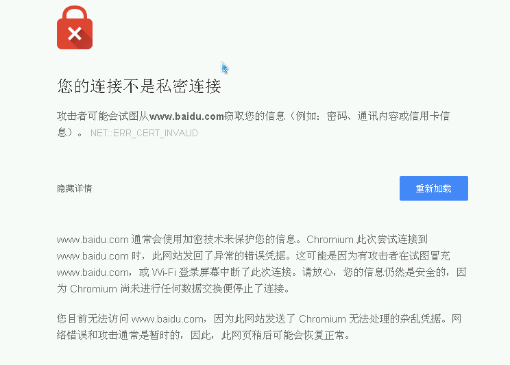

Windows Server 2003一度是我最喜欢使用的操作系统，使用的时间可能也是最长。Windows Server 2003是2003年3月28日发布的，并已于2015年终止支持，在20多年后的今天来使用它，多少会有一些问题，好在当初已经预见到这一系统终止支持后，运行在它之上的软件会很难找，因此早已将一些常用的软件保存了可用版本。出于研究一些软件的需要，最近又将这个系统安装在虚拟机中，本文记录一些使用过程中遇到的问题及其解决办法，如无特别提及，本文所说环境为Windows Server 2003 R2 SP2。
远程桌面访问到物理桌面
不同于后来的Windows 7等操作系统，在使用远程桌面连接到Windows Server 2003时，默认连接的是类似于VNC一类工具提供的虚拟桌面，显示的内容和物理桌面是不同的，远程桌面用户和本地用户同时登录时，各自在使用自己的桌面，不能共享。但Windows Server 2003已经支持了连接到物理桌面的功能，若客户端为Windows的远程桌面连接程序，只需要在执行mstsc命令时，加上/console选项（Windows 7之前操作系统）或/admin选项（Windows 7以后操作系统）即可。可以在保存远程桌面的配置文件时，将这选项加在连接目标后面，示例：在Windows.rdp文件的计算机这一栏中，填写192.168.1.2:3389 /admin。如果是在Linux系统上使用Remmina来连接，则可在连接配置文件的"Advanced"标签页内，选上"Attach to console(2003/2003 R2)"。
使用远程桌面连接或Remmina登录时，即使连接到物理桌面，也属于远程用户，可以打开“管理工具”，“终端服务管理器”，“这台计算机”，“会话”，查看会话类型为“RDP-TCP”并且状态为“运行中”的会话。如果要断开远程登录用户的会话，可在此界面选中会话，点击鼠标右键，选择“断开”。
不管是通过远程登录，还是本地控制台登录，物理桌面只允许一个会话，新的登录会将前面正在连接的会话断开。
对于不连接到物理桌面的登录，可以通过“管理工具”，“终端服务配置”，“服务器设置”，“限制每个用户使用一个会话”来使得同一用户只能远程连接到一个会话，这样从不同终端登录时，新的登录会将前面正在连接的会话断开，而桌面内容维持。
Windows 7以上系统连接Windows 2003远程桌面很卡
从Vista开始，微软在TCP/IP协议栈里新加了一个叫做“Window Auto-Tuning”的功能。这个功能本身的目的是为了让操作系统根据网络的实时性能（比如响应时间）来动态调整网络上传输的数据窗口的大小，从而达到实时优化网络性能的目的。但这个功能可能会使远程桌面到Windows 2003时，响应变得非常慢。通过把autotuninglevel设置成disabled，就可以让数据窗口保持默认值。如果设置成highlyrestriected的话，那么就是让系统非常保守地来调整这个数据窗口大小。
设置命令如下:
1 | netsh interface tcp set global autotuninglevel=disabled |
浏览网页时提示证书无效的问题
如下图所示“NET::ERR_CERT_INVALID”，即使点击“重新加载”，依然是一样的提示，或是提示“您计算机的日期和时间不正确，因此无法与XXX建立私密连接。NET::ERR_CERT_DATE_INVALID”，然而，即使更新了计算机的日期和时间为当前最新后，也还是一样的提示。实际上，这都是因为系统证书已经过期很久了，而现在已经无法自动更新。

在仍受支持的Windows操作系统中，系统更新功能会适时更新根证书。因此，在以前，可以从一台更新到最新的Windows系统上，将其证书导出，并导入到Windows 2003中。在Windows 11中，可以使用如下的命令来生成一个包含根证书集的文件：
1 | certutil.exe -generateSSTFromWU roots.sst |
然后将生成的roots.sst文件复制到需要更新证书的系统上，例如复制在C:\Temp目录，此时需要使用到一个名为rootsupd的工具来完成升级，这工具由Microsoft提供，但现在已经不能从Microsoft网站下载，一个可用的版本来自于杀毒软件厂商卡巴斯基。将此工具下载后，在命令行中执行如下命令，当提示是否覆盖文件时，选择“否”
1 | rootsupd.exe /C /T:C:\Temp |
完成后，确认C:\Temp已经存在updroots.exe程序，然后执行如下命令来安装证书：
1 | cd C:\Temp |
然而时至今日，即使信任的根证书得到更新，浏览器验证证书时，也使用了更高等级的加密协议，而新安装的Windows 2003系统仅支持到TLS 1.0、SSL 2.0、SSL 3.0，依然会提示证书无效。此时，一个可选的办法是：访问https://legacyupdate.net网站来为旧系统获得更新。此网站不仅提供了Windows Update功能，也解决了证书的问题。只是首次使用的时候，检测和安装更新可能会有点久。